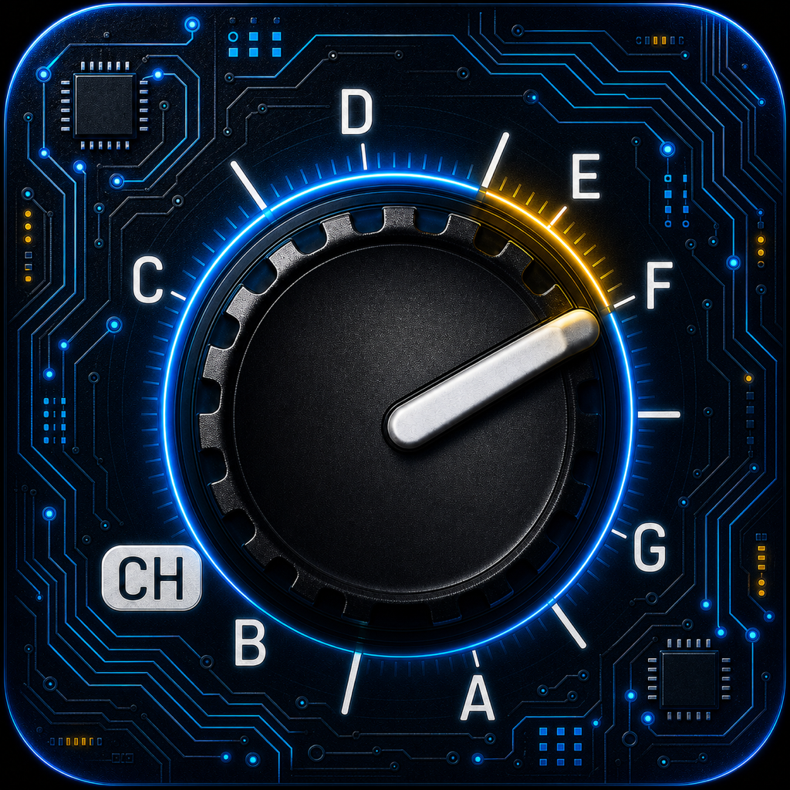

AUTO-TUNE KEY GUIDE SYSTEM
SNAPVOX
OFFICIAL SUPPORT / OMEGA BRAIN
SNAPVOXは、ビートや楽曲のキー／スケールをもとに、 Auto-Tune系機材・プラグインで使いやすい設定キーを確認するための 音楽制作サポートアプリです。
HOW TO USE
01 KEY CHECK
ビートや楽曲のキー／スケールを確認します。
02 SELECT
SNAPVOXでキーを選択、または手入力します。
03 SETUP
表示されたAuto-Tune用の設定キーを確認します。
04 ADJUST
実際の音を聴きながら微調整してください。
FEATURES
KEY GUIDE
楽曲キーをもとに設定候補を確認。
FAST CHECK
素早くキー設定を確認可能。
NO LOGIN
アカウント登録不要。
NO AI / NO MEDIA
音声・画像の収集は行いません。
FAQ
ログインは必要？
いいえ。ログイン不要です。
AIを使っていますか？
いいえ。AI解析・生成は行っていません。
音声を保存しますか？
いいえ。保存・送信しません。
設定が合わない場合は？
元キーやスケール設定をご確認ください。
CONTACT
不具合・お問い合わせはこちらまでお願いします。
support@snapvox.app
PRIVACY POLICY
SNAPVOXは個人情報を収集・保存・第三者提供しません。
音声、画像、位置情報、連絡先情報を取得することはありません。